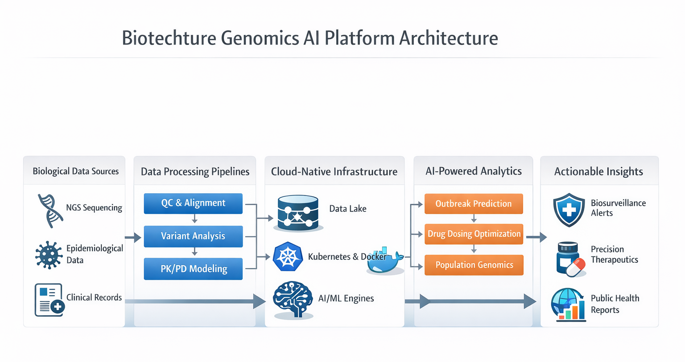

Genomics Infrastructure for Reproducible Research, AI, and Precision Therapeutics
Explore Platform View Deployment OptionsDeploy JupyterHub-based environments with integrated CWL and Nextflow pipelines, containerized workflows, and scalable cloud-native infrastructure.
Built for reproducibility, collaboration, and production-grade bioinformatics execution.
Explore JupyterHub PlatformFor small research teams and early-stage labs.
• Managed JupyterHub
• Pre-configured ML notebooks
• CWL / Nextflow integration
For scaling genomics workflows.
• Kubernetes deployment
• Workflow orchestration
• Monitoring + logging
For pharma and regulated environments.
• On-prem / hybrid cloud
• CI/CD pipelines
• Security + compliance
Reproducible workflow engineering.
• Pipeline development
• Optimization
• Training

CWL/Nextflow pipelines orchestrated via Kubernetes with AI-driven analytics layers.